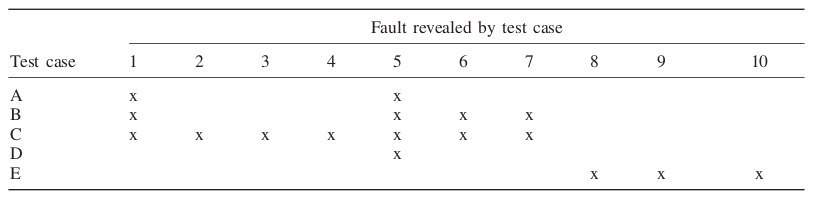
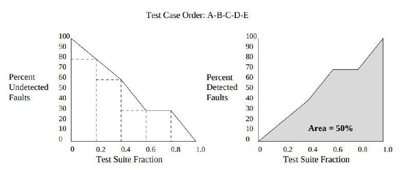
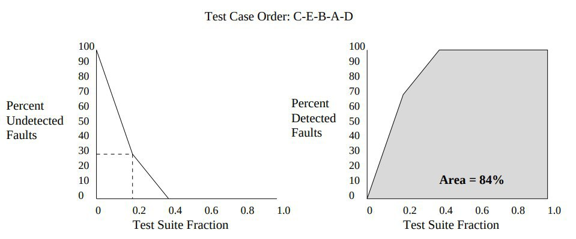

Test Selection and Prioritization¶
Testing can take a large part of the development time and be expensive to create and execute, so It’s also a job of to the developers to choose which tests should be done first and which method could used to test a specific part of your code. With a good skill on test selection and prioritization a developer can assure quality software and cut the costs associated with the testing phase.
Test Case Selection¶
Test Case Selection is a problem about choosing which of the current available tests will be used while testing the specific part of the program. We need to choose such test set such as the largest number of fault-revealing tests are included. In this subsection we will be discussing some test case selection techniques and primarily assumes developer has free access to the application source code.
Safe approach¶
Safe techniques are a weaker but sometimes effective way to find such tests and involves using the most amount of tests possible that could impact the modified code. One way to finding this tests could be defining the modification-traversing tests cases and use them as our test set. A test is considered modification-traversing if it either runs through new or modified parts of the code or it used to execute now deleted lines of code. This approach may face some difficulties in larger projects since as the test set keep increasing we may see also a growth on the execution runtime, impacting the costs and the fault detection delay.
Firewall approach¶
Introduced by Leung and White the Firewall approach is used for integration testing and involves creating a firewall around the system modules and categorizing them in the following categories:
No Change.
Module has not been modified.
Only Code Change.
Module had a change of code but no behavioral change intended.
Spec Change.
Module had a change both on code and behavior.
By doing this classification we can search for the integration tests that interact with this different modules. Any tests that involves only modules from the No Change group should not be executed. Integration tests between two modified modules should be executed, as well as their respective unity tests. Now the integration tests that involves a module from the unchanged group and one from the changed group will be the boundaries for our firewall, so it’s recommended to be executed but can be flexible depending on the development situation.
Data-flow analysis approach¶
Presented by Harrold and Soffa this approach involves analyzing the application data, such as variables and objects, and detecting which parts of the code would be affected by a change in their content or behavior. This approach is often used along other coverage-based approach, since it could be a challenge to detect changes unrelated to data-flow such as new procedure calls without any parameter, or modified output statements that contain no variable.
Test Prioritization¶
Regression test is performed alongside software development to guarantee that new changes don’t affect the behavior of unchanged code. Having a good test-case suite that covers the software as a whole can be challenging and costly, as you can have a large suite, and running all of them may take a while. Test prioritization aims to sort the test suite in an optimal way and if the tests get halt at some point, the maximum coverage is achieved by that order. This technique is often applied after test case selection. Let’s take as an example the test case suite: A, B, C, D, E, and its fault reveal values as shown in the following table:
Since the goal is to maximize early fault detection, ordering the test suite execution as C-E-A-B-D is better than A-B-C-D-E (without changing the order) since starting with C-E all possible faults will be exposed after the execution of the second test case in the set. This is illustrated in the image below. The first shows that the full coverage is only achieved after the execution of the last test case of the sequence (E), while if we rearrange and use the optimal ordering full coverage is satisfied after the execution of the second test.
  
Analyzing the prioritization before running the entire test case set is very hard and some surrogates are used to reveal fault exposure metrics.
Coverage-based prioritization¶
Structural coverage is a metric that is often used for prioritization rule, the idea is that early maximization of structural coverage will also lead to maximal fault coverage. Rothermel et al. reported studies of different prioritization techniques following greedy techniques: branch-total, branch-additional, statement-total, statement-additional, Fault Exposing Potential (FEP)-total and FEP-additional.
Total branch coverage prioritization¶
Getting the number of decision branches that a test case can cover and sorting them by the total number of branches decreasingly.
Additional branch coverage prioritization¶
This process is very similar to total branch coverage, but here the test cases are chosen iteratively to generate the best branch coverage in the next step. In the end, you might end with some tests that cannot add additional branch coverage, those can be selected in any order using another prioritization technique.
Total statement coverage prioritization¶
The same process as total branch coverage, but statements are counted instead of branches.
Additional statement coverage prioritization¶
The same process as additional branch coverage, but statements are counted instead of branches.
Total fault-exposing-potential prioritization¶
Statement and branch prioritization may mask a fact about test cases and fault, the ability of a fault be exposed can depend on the probability of that fault cause a failure to the program. Total fault-exposing potential uses mutation analyses, calculating a mutation score for each pair of test cases and statements and summing all values to define a test case prioritization order.
Additional fault-exposing-potential prioritization¶
Same approach as Total fault-exposing-potential, but after choosing a test case, the process lower the points for other test cases that cover the same statements.
These surrogates were proved by Rothermel to perform better than random and no prioritization techniques, on average across all the tested programs the Additional fault-exposing-potential prioritization performed most-effectively and almost reached the performance of the optimal approach.